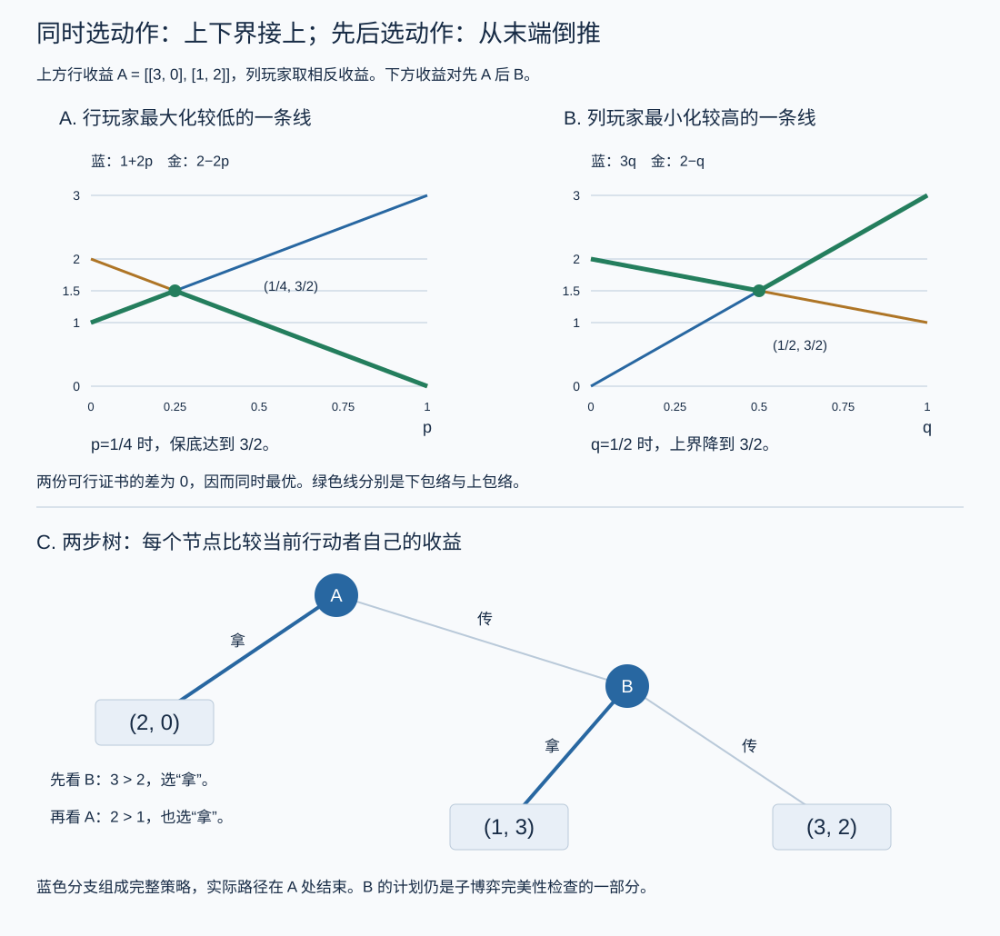

本页目录
博弈论 II · 零和、动态博弈与机制设计
三个专题收官：零和博弈（对抗的极致——minimax 定理原来就是 LP 强对偶）、动态与重复博弈（时间如何改变博弈——合作在重复中成为可能）、拍卖与机制设计（反向博弈论：设计规则让自利产生善果）。每个专题都有一条通往你世界的线：GAN、策略回测、广告拍卖。

学习层：阶段值、动态值与“有限回放看起来收敛”不是一回事
1. 具体实例：同一场对抗，先问一局还是多局
行玩家在每一阶段选择动作，列玩家同时选择反制动作；行玩家的收益矩阵是
这是猜硬币型零和对抗：没有纯策略鞍点，但双方各以二分之一混合时，阶段值为零。若游戏还带状态，当前动作会把系统送到下一个状态，今天的收益之外还要评价未来。于是“这一张矩阵的值”和“整个动态博弈的值函数”是两个层次。
实验台提供阶段矩阵、状态转移、折扣因子和迭代次数。它会先隐藏精确 minimax、混合概率、Shapley 更新和采样误差；请先预测，再揭示。特别注意：一轮矩阵求值是精确的有限计算，有限轮 Bellman 回放不是一般收敛证明。
2. 先预测：对手混合后，哪些结论还能保留？
先回答三个问题：
- 对上面的矩阵，纯策略值是否存在？若没有，混合策略如何让对手无差异？
- 当 \(0\le\gamma<1\) 时，Shapley 算子两次应用后的差异最多会被放大、保持，还是按 \(\gamma\) 压缩？
- 把 \(\gamma\) 调到 1，或者只做有限次迭代、有限次随机采样，能否声称对任意动态零和博弈都收敛？
“看见曲线变平”只能是当前参数、当前初值和当前精度下的证据；它不能替代定理所需的折扣、有限性、界与转移条件。
3. 正式桥：从 minimax 到 Shapley 算子
对有限阶段矩阵 \(A\)，行玩家的安全值和列玩家的压制值分别为
von Neumann 极小极大定理说明二者相等，记为 \(v(A)\)。混合策略 \(x,y\) 是概率分布；在一个内点解里，每个玩家都让对手所用的纯动作无差异。这个结论依赖零和收益与有限矩阵结构，不能把阶段矩阵的最大值直接当成整个动态博弈的最优值。
若状态为 \(s\)，动作对 \((i,j)\) 产生阶段收益 \(r_s(i,j)\) 和下一状态分布 \(P(\cdot\mid s,i,j)\)，Shapley 算子写成
若收益有界、状态与动作有限且 \(0\le\gamma<1\)，则
这是折扣 Shapley 算子的压缩证书：固定点唯一，价值迭代在该范数下收敛，并可用残差除以 \(1-\gamma\) 给出误差上界。\(\gamma=1\) 时这个证书消失；有限时域仍可从终点逆向归纳，但无限时域平均收益或一般未折扣随机博弈需要额外假设。
4. 可操作实验与静态 fallback
静态 fallback（脚本不可用时）：阶段矩阵 \(A=\left(\begin{smallmatrix}1&-1\\-1&1\end{smallmatrix}\right)\) 的纯安全值为 \(-1\)，纯压制值为 \(1\)，但混合 minimax 值为 \(0\)，双方均匀混合。动态部分取两个状态和 \(\gamma=0.8\)，每轮对当前动作收益加上 \(0.8\) 倍的下一状态价值；残差若为 \(r_k\)，压缩证书给出 \(\lVert V_k-V^*\rVert_\infty\le r_k/(1-0.8)\)。把 \(\gamma\) 调到 1 时，表格中的“误差上界”应变成“无证书”，而不是自动变成“已经收敛”。
| 层次 | 可计算对象 | 证书与边界 |
|---|---|---|
| 阶段矩阵 | minimax 值与混合策略 | 有限零和矩阵的极小极大定理 |
| 折扣动态 | Shapley 更新与固定点 | 有限模型、界收益、折扣小于一时有压缩 |
| 有限回放 | 当前迭代值、残差和抽样均值 | 是实验账本，不是一般收敛定理 |
| 未折扣/平均收益 | 需要另行分析的动态博弈 | 不能照搬折扣压缩证书 |
5. 定理与失败边界
- 阶段 minimax 等式保留的是零和结构；一般和博弈不能只看一个玩家的矩阵值。
- Bellman/Shapley 算子的压缩性来自 \(\gamma<1\) 与有界转移回报；\(\gamma=1\) 时有限迭代仍可画图，但不存在同一个残差上界。
- 混合策略的抽样均值会随样本数变化；一次有限采样与一组有限迭代都不能冒充对所有状态、初值或博弈的收敛。
- 动态转移会改变未来价值，所以“每阶段各自最优”一般不等于全局动态最优；必须把当前矩阵与下一状态的值一起送进算子。
- 实验只覆盖有限、低维、给定参数的模型；无限动作、非零和、未折扣平均收益和对手学习动态需要额外理论。
1. 零和博弈与极小极大定理
二人零和：你得即我失，\(u_2 = -u_1\)，一张矩阵 \(A\) 说尽（行玩家收益）。安全策略思维：行玩家保底 \(\max_x \min_y\)，列玩家压顶 \(\min_y \max_x\)；一般 \(\max\min \leq \min\max\)（先亮牌吃亏）。
定理（von Neumann 极小极大，1928） 允许混合策略后：
证明即 LP 对偶（优化 IV 的完整兑现）：行玩家"最大化保底值"写成 LP（变量 = 混合概率 + 保底 \(v\)），列玩家的问题恰是它的对偶 LP——强对偶给 \(\max\min = \min\max\)。\(\blacksquare\) 求解零和博弈 = 解一个 LP（单纯形法上岗）；Nash 的一般存在性定理在零和情形退化为线性规划——对抗的数学是凸的，这是它比一般博弈"好解"的原因。
🔗 GAN 对账（ai 课/comfy 课 01 的方程认祖）：\(\min_G\max_D\) 训练目标就是零和博弈，训练不稳定的一个根源正是"在非凸参数空间里找鞍点"——minimax 定理的凸性前提不再免费。
2. 动态博弈：时间进场
扩展型（博弈树）：轮流行动、看得见历史。求解 = 逆向归纳：从叶子倒推每个节点的最优选择——就是动态规划（优化 IV Bellman 的博弈版），产物叫子博弈完美均衡（每个子博弈里都理性——排除"不可信的威胁"：空头恐吓在逆向归纳下自动瓦解）。
先动的价值：Stackelberg 竞争中领导者先动并承诺，跟随者最佳回应——先动者利用"对方会理性回应"获得优势；承诺的可信性是战略资产（烧船、公开立军令状的博弈论内核：自断退路改变对手对你的预期）。
重复博弈：合作的数学出路。一次性囚徒困境必背叛；无限重复 + 未来足够重要时合作可持续：以"冷酷触发"策略（你背叛一次，我永远背叛）支撑合作的条件——
（\(\delta\) = 折现因子，\(C\) 合作收益、\(T\) 背叛诱惑、\(P\) 惩罚收益——等比级数，数分 IV 干活。）读法：\(\delta\) 够大（在乎未来/关系长久）合作自我维持——熟人社会守信、国际贸易协定、商誉的价值，全是这一行不等式；Folk 定理（陈述）说重复博弈能支撑大量结局——制度与预期决定落在哪个均衡。Axelrod 锦标赛的 tit-for-tat（以牙还牙、以德报德）是它的实验室名场面。
3. 拍卖与机制设计：反向博弈论
前两节给定规则求均衡；机制设计反过来——给定想要的结果，设计规则使自利玩家的均衡恰好实现它（"制度是被设计的博弈"）。
一价 vs 二价拍卖（密封出价）：一价（出最高价者按自己出价付）——最优策略是压价（低于真实估值，博弈复杂）；二价拍卖（Vickrey）：出最高价者按第二高价付——
定理 二价拍卖中，如实出价是（弱）优势策略。 证明（两行）：你的出价只决定"是否赢"，不决定"付多少"（付的是别人的价）——报高只会在"估值 < 第二价"时多赢下亏本局，报低只会错失有利可图的局；如实出价恰好"该赢则赢"。\(\blacksquare\)
读法：好机制让说真话成为最优——参与者不必费心算计（策略防操纵）。谷歌/各广告平台每天数十亿次的关键词拍卖是二价机制的变体（GSP/VCG）——这两行证明支撑着互联网的主要商业模式。VCG 机制一嘴：二价思想推广到一般公共决策（让每人支付"自己给别人造成的外部性"）；诺奖三连（Vickrey、机制设计三人组、拍卖设计两人组）标记着这条线的分量。
演化博弈一嘴：把"理性选择"换成"复制动态"（高收益策略在种群中增殖 \(\dot x_i = x_i(u_i - \bar u)\)——ode-03 的动力系统），均衡概念换成 ESS（演化稳定策略）——生物学与文化演化的博弈语言；NE 不需要理性也能涌现，是对"人真的会算吗"质疑的回应。
4. 典型例题
例 1（LP 解零和） 剪刀石头布（赢 1 输 -1 平 0）：对称性 + 无差异原则给唯一 NE 各 \(\frac13\)，博弈值 0；用 LP 写出并验证对偶解相同——一次把优化 IV 与本页焊死的练习。
例 2（逆向归纳） 蜈蚣博弈两步版：A 可拿 \((2,0)\) 结束或传给 B；B 可拿 \((1,3)\) 或传回得 \((3,2)\)。倒推：B 会选 \((1,3)\)（3>2）⇒ A 预见此，选 \((2,0)\)（2>1）——理性倒推吃掉了双赢的 \((3,2)\)；实验中真人常传球走得更远：理性假设的边界（行为博弈论的入口）。
例 3（合作条件） \(C = 3, T = 5, P = 1\)：合作可持续 \(\iff \frac{3}{1-\delta} \geq 5 + \frac{\delta}{1-\delta} \iff \delta \geq \frac12\)——"关系至少值一半权重"是这组参数下守信的门槛；一锤子买卖（\(\delta \to 0\)）必然互坑，回头客生意自动讲诚信。商业模式决定道德水位，一行不等式的社会学。\(\blacksquare\)
博弈论收束
两页的骨架：均衡（自我强化的僵局，不动点保证存在）→ 对抗（minimax = LP 对偶）→ 时间（逆向归纳 = DP；重复养合作）→ 设计（让说真话成为均衡）。它是本站唯一"对手会还手"的一门课，也是从数学走向经济学、演化生物学与多智能体 AI 的官方出口。